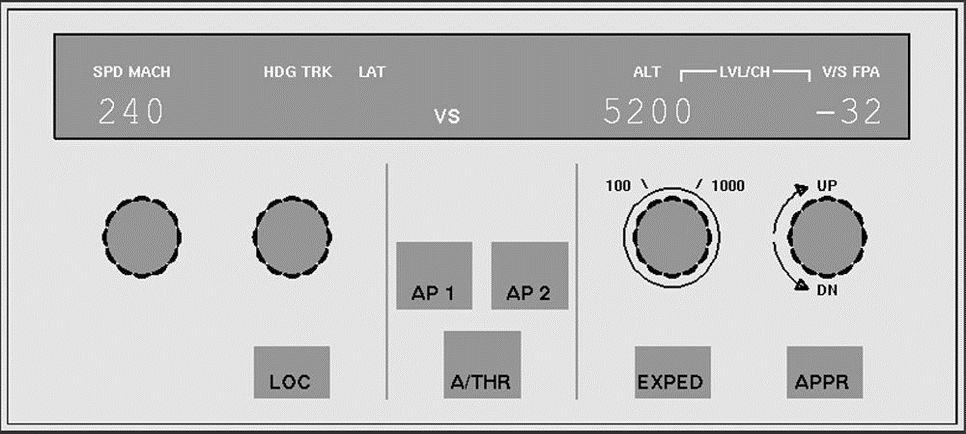
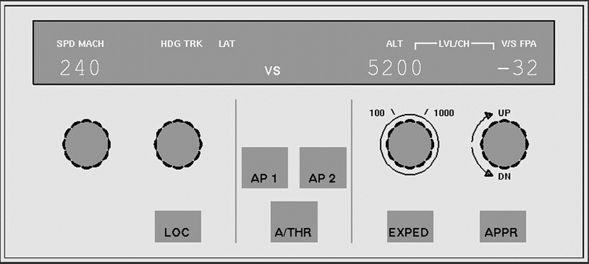

CO582: Computer Interaction and User Experience
Errors
Tomas Petricek
email: t.petricek@kent.ac.uk
twitter: @tomaspetricek
office: S129A
{kind=link}
Human and computer errors
Human error (Reason, 1990)
Error-free performance
The odds against error-free performance are high.
There is one way of performing a task correctly, but
each step provides a multitude of inappropriate pathways.
Forms of errors
The reality is different. Not only are errors rarer than correct actions, they also take a limited number of forms.
Computer error (Ensmenger, 2010)

By the end of 1960s managers, academics and governments were talking of a crisis. In the next several decades, they released warnings about the desperate state of the software industry with ritualistic regularity.
How can we explain the perpetual crisis in one of the most successful and profitable industries of all time?

How often do computers kill people?
Mechanizing Proof (MacKenzie, 2001)
Collected around 1,100 deaths
90% caused by faulty human-computer interaction
4% caused by physical faults (interference)
3% caused by software bugs (mostly Patriot missile)
Poor interfaces and organizational failings
Faulty human-computer interaction
Human error usually is a result of poor design. Human err continually; it is an intrinsic part
of our nature. System design should take this
into account.(Norman, 1988)
How and why of error research

Why we need to understand errors
- Design resilient systems
- Criminal responsibility implications
- Teach us how cognition works
How to learn from errors
- "Human error" does not tell us much
- Detailed analysis of root causes
- Computing can learn from aviation!
Classifying human errors

Each step provides a multitude of inappropriate pathways
Many kinds of errors

When error occurs
- Perceptual errors
- Cognitive errors
- Motor errors
How error occurs
- Was the action planned?
- What caused the error?
- Mistakes, failures, slips and lapses
Perceptual, cognitive and motor errors
Perceptual error
Misleading clues or sensory overload
Did not notice the batter indicator
Cognitive error
High level memory or cognitive processes
I remembered my password incorrectly
Motor error
Unnatural, special or too similar motor movement
I cannot touch the right virtual key on my phone

James Reason (1990)
Human Error
Four basic kinds of errors
Mistake - Following a wrong plan
Application of a bad rule or poor remembering
Failure - Good plan, but too hard
Shooting all the monsters in a game
Lapse - Working memory failure
I forgot what I was just doing
Slip - Failed execution
Automatically getting off at your usual station

What kind of error is this?
Mistake, failure, lapse or slip?
Buying a wrong train ticket

Wrong ticket by mistake
- Cannot figure out what to buy
- Have a rail card?
- When is super off peak?
Wrong ticket as a slip
- I always buy one particular ticket
- Doing the same over weekend
- The bloody machine resets your options!
Buying a wrong train ticket
Why are we classifying kinds of errors?
Novices make mistakes
Do not understand how rail tickets work
Experts make slips
Accidentally click on a wrong button
Many kinds of slips and lapses
Empirical clustering of common errors
- Capture errors
- Description errors
- Data driven errors
- Associate activation
- Loss of activation
- Mode errors
Capture errors

Capture error example
I was using a copying machine, and I was counting the pages. I found
myself counting, "1, 2, 3, 4, 5, 6, 7, 8, 9, 10, Jack, Queen, King."
I had been playing cards recently.
How capture errors happen?
A more familiar sequence of action captures a less familiar sequence of actions
Description errors

Description error example
Correct action using a
similar but wrong object
How they happen?
Accidentally perform different action with similar description
Data-driven and associate errors

Data driven error
- Sensory information intrudes
- Saying X because someone said it
Associate activation error
- Internal thought intrudes
- Enter login for another system
- Dismiss an important message box
Loss of activation and mode errors

Loss of activation
- Forgot the goal in the middle
- Go to Google but forget what you wanted to search for
Mode error
- Do action in a wrong mode
- Typing WITH CAPS LOCK ON
- Crash an airplane...

Air Inter Flight 148
Crashed at 19:20:33 CET in the mountains at an altitude of 800 m

Controls with two descent modes
1. Angle in degrees
2. Feet per minute
Not the only cause, but one factor..
 

Angle in degrees
Descent by
3.2 degrees
Feet per minute
Descent by 3200 feet per minute
Finding and responding to errors
Detecting errors

How to detect errors
- Self-monitoring
- Environment gives us hints
- Another person notices it
Why we miss errors
- Accept simplistic partial explanation
- Minor mismatch of mental model
- Relevance bias prevents us from seeing big picture
Detecting errors
Why is error detection getting harder
Experienced mechanics notice errors by sound
In complex systems you cannot see errors directly
Latent errors more common than active errors
Swiss cheese model of complex errors
Resident pathogen metaphor for system errors
Cheese model
Many factors contribute to an error
All have to be aligned for accident to happen
System response to errors
How can system respond to a detected error
Do nothing - Leave everything to the user
Gagging - Prevent unrealistic intentions
Warnings - Warn about unrealistic intentions
Self-correct - Automatically do the right thing
Dialogue - Ask user to explain or clarify
Designing for errors
Designing for avoiding errors
Human error usually is a result of poor design. Human err continually; it is a part of our nature. System design should take this into account.
Designing for avoiding errors
Consider conversation between two people
Grammatical errors are not even noticed
Restarts and corrections are ignored
Misstatements interpreted approximately
Statements checked for common sense
Confusion corrected via a dailogue
Designing for avoiding errors
What can computer system do?
Understand root causes behind errors
Implement common sense checks for inputs
Allow undoing an action
Support error discovery & allow corrections
Do not reject, but allow to correct

Buying a London Canterbury ticket
Many ticket types
Time and date sometimes matter
Railcard discounts

Buying a London Canterbury ticket
Ticket options at 9:59am
Changing time used to change options

How to improve ticket machines?
Ticket options at 10:00am
Do not add railcard first, it would get removed
How to improve ticket machines?
Expert slips vs. novice mistakes
Add common sense checks?
Support error discovery?
Errare humanum est
If it is impossible to guarantee the elimination of errors, then we must discover ways of mitigating their consequences in unforgiving situations.
What to do when errors happen

Learning to live with errors
- Users learn to avoid errors
- Do not hide too many details
- Leave room for workarounds
Resilience engineering
- Monitoring so that experts can notice
- Allow manual correction
- Analyze developments in advance
Summary
Different kinds of evaluation
Different types of errors
Mistakes, failures, lapses, slips
Experts make slips, novices mistakes
Two ways of grouping errors
Was the action planned? What went wrong?
Analysis of common errors empirically
How to prevent and correct errors
Design tips to prevent errors
Different ways of responding to errors
CO582: Errors
What you should remember from this lecture
- Recognize mistakes, failures, slips and lapses
- Capture, description, data, association & mode errors
- How can systems prevent & respond to errors
Tomas Petricek
t.petricek@kent.ac.uk | @tomaspetricek
References
Books
- Human Error, James Reason
- The Design of Everyday Things, Don Norman
Papers and links
- Experimental Study of Vertical Flight Path Mode Awareness, Eric N. Johnson, Amy R. Pritchett